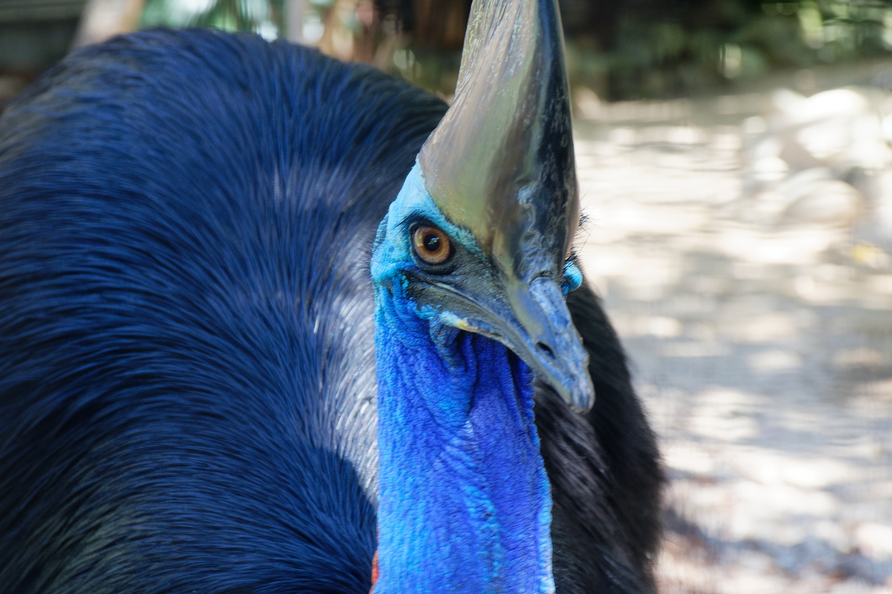
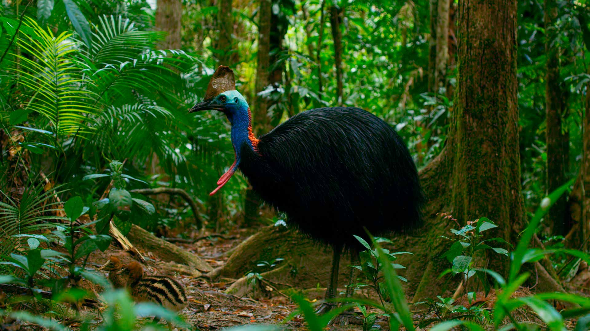

CASUAR
A plumagem do casuar é abundante e de cor acinzentada, com penas coloridas na base do pescoço. Estas aves têm uma crista encarnada no alto da cabeça, que cresce devagar durante os primeiros anos do animal e tem função desconhecida. Além disso, O casuar é uma ave ágil, que pode correr a cerca de 50 km/h e saltar 1,5 m sem qualquer balanço. São animais normalmente pacatos e tímidos, que no entanto podem ser extremamente agressivos e perigosos para o homem para proteger o ninho ou as suas crias.
Em um novo estudo, foi descoberto uma análise comparativa das semelhanças físicas entre as duas espécies pode jogar luz sobre o papel funcional desempenhado pela crista – um possível exemplo de evolução convergente, em que uma característica física semelhante emerge de forma independente em duas espécies diferentes (casuares podem ter evoluído a partir dos dinossauros, mas eles conseguiram essas características particulares de forma independente
